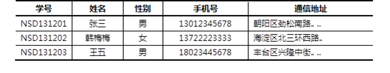

本案例要求熟悉MySQL官方安装包的使用，快速构建一台数据库服务器：
本课程将使用64位的RHEL 7操作系统，MySQL数据库的版本是5.7.17。
访问http://dev.mysql.com/downloads/mysql/，找到MySQL Community Server下载页面，平台选择“Red Hat Enterprise Linux 7/ Oracle Linux”，然后选择64位的bundle整合包下载，如图-1所示。
图-1
注意：下载MySQL软件时需要以Oracle网站账户登录，如果没有请根据页面提示先注册一个（免费）
实现此案例需要按照如下步骤进行。
步骤一：准备工作
1）停止mariadb服务
- [root@localhost ~]# systemctl stop mariadb
2）删除/etc/my.cnf配置文件
此配置文件由RHEL自带的mariadb-libs库提供：
[root@localhost ~]# rm -rf /etc/my.cnf
3）删除数据
- [root@localhost ~]# rm -rf /var/lib/mysql/*
4）卸载软件包（没有会显示未安装软件包）
- [root@localhost ~]# rpm -e --nodeps mariadb-server mariadb
- 警告：/var/log/mariadb/mariadb.log 已另存为/var/log/mariadb/mariadb.log.rpmsave
步骤二：安装软件包
1）安装mysql时可能会缺少某些依赖包，需提前单独安装
- [root@localhost ~]# yum -y install perl-Data-Dumper perl-JSON perl-Time-HiRes
2）物理机传输解压包给虚拟机192.168.4.1
- [root@room9pc01 ~]# cd 桌面
- [root@room9pc01 桌面]# scp mysql-5.7.17.tar 192.168.4.1:/root/ //给虚拟机传包
- root@192.168.4.1's password:
- mysql-5.7.17.tar 100% 543MB 95.6MB/s 00:05
3）虚拟机192.168.4.1解压mysql-5.7.17.tar 整合包
- [root@localhost ~]# tar -xvf mysql-5.7.17.tar //解压mysql整合包
- ./mysql-community-client-5.7.17-1.el7.x86_64.rpm
- ./mysql-community-common-5.7.17-1.el7.x86_64.rpm
- ./mysql-community-devel-5.7.17-1.el7.x86_64.rpm
- ./mysql-community-embedded-5.7.17-1.el7.x86_64.rpm
- ./mysql-community-embedded-compat-5.7.17-1.el7.x86_64.rpm
- ./mysql-community-embedded-devel-5.7.17-1.el7.x86_64.rpm
- ./mysql-community-libs-5.7.17-1.el7.x86_64.rpm
- ./mysql-community-libs-compat-5.7.17-1.el7.x86_64.rpm
- ./mysql-community-minimal-debuginfo-5.7.17-1.el7.x86_64.rpm
- ./mysql-community-server-5.7.17-1.el7.x86_64.rpm
- ./mysql-community-test-5.7.17-1.el7.x86_64.rpm
步骤三：启动MySQL数据库服务并设置开机自启
- [root@localhost ~]# systemctl start mysqld //启动mysql服务
- [root@localhost ~]# systemctl enable mysqld //设置开机自启
- [root@localhost ~]# systemctl status mysqld //查看mysql服务状态
- ● mysqld.service - MySQL Server
- Loaded: loaded (/usr/lib/systemd/system/mysqld.service; enabled; vendor preset: disabled)
- Active: active (running) since 二 2018-08-28 10:03:24 CST; 8min ago
- Docs: man:mysqld(8)
- http://dev.mysql.com/doc/refman/en/using-systemd.html
- Main PID: 4284 (mysqld)
- CGroup: /system.slice/mysqld.service
- └─4284 /usr/sbin/mysqld --daemonize --pid-file=/var/r...
- 8月 28 10:02:56 localhost.localdomain systemd[1]: Starting MySQ...
- 8月 28 10:03:24 localhost.localdomain systemd[1]: Started MySQL...
- Hint: Some lines were ellipsized, use -l to show in full.
步骤四：连接MySQL服务器，修改密码
查看随机生成的root管理密码
- [root@localhost ~]#grep 'temporary password' /var/log/mysqld.log
- 2017-04-01T18:10:42.948679Z 1 [Note] A temporary password is generated for root@localhost: mtoa>Av<p6Yk //随机生成的管理密码为mtoa>Av<p6Yk
2）使用客户端命令mysql连接到MySQL服务器
提示验证时，填入前一步获得的随机密码，验证成功后即可进入“mysql> ”环境：
- [root@localhost ~]# mysql -u root -p'mtoa>Av<p6Yk'
- mysql: [Warning] Using a password on the command line interface can be insecure.
- Welcome to the MySQL monitor. Commands end with ; or \g.
- Your MySQL connection id is 11
- Server version: 5.7.17
- Copyright (c) 2000, 2016, Oracle and/or its affiliates. All rights reserved.
- Oracle is a registered trademark of Oracle Corporation and/or its
- affiliates. Other names may be trademarks of their respective
- owners.
- Type 'help;' or '\h' for help. Type '\c' to clear the current input statement.
- mysql> //登录成功后，进入SQL操作环境
用该密码登录到服务端后，必须马上修改密码，不然会报如下错误：
- mysql> show databases;
- ERROR 1820 (HY000): You must reset your password using ALTER USER statement before executing this statement.
3）执行SET PASSWORD命令修改密码
这个其实与validate_password_policy的值有关，默认为1，所以刚开始设置的密码必须符合长度，且必须含有数字，小写或大写字母，特殊字符。如果我们不希望密码设置的那么复杂，需要修改两个全局参数：validate_password_policy与validate_password_length。validate_password_length默认值为8,最小值为4，如果你显性指定validate_password_length的值小于4，尽管不会报错，但validate_password_length的值将设为4。
可参考下列指令：
- mysql>set global validate_password_policy=0; //只验证长度
- Query OK, 0 rows affected (0.00 sec)
- mysql>set global validate_password_length=6； //修改密码长度,默认值是8个字符
- Query OK, 0 rows affected (0.00 sec)
- mysql> alter user user() identified by "123456"; //修改登陆密码
- Query OK, 0 rows affected (0.00 sec)
上述操作的结果是——更改数据库用户root从本机访问时的密码，设为123456。
退出“mysql> ”环境，重新登录验证，必须采用新的密码才能登入：
- mysql> exit //退出 mysql> 环境
- Bye
- [root@localhost ~]# mysql -u root -p //重新登录
- Enter password: //输入新设置的密码
- Welcome to the MySQL monitor. Commands end with ; or \g.
- Your MySQL connection id is 15
- Server version: 5.7.17 MySQL Community Server (GPL)
- Copyright (c) 2000, 2016, Oracle and/or its affiliates. All rights reserved.
- Oracle is a registered trademark of Oracle Corporation and/or its
- affiliates. Other names may be trademarks of their respective
- owners.
- Type 'help;' or '\h' for help. Type '\c' to clear the current input statement.
本案例要求熟悉MySQL的连接及数据库表的增删改查等基本管理操作，主要完成以下几个方便的操作：
表－1 测试用表数据
实现此案例需要按照如下步骤进行。
步骤一：使用mysql命令连接数据库
连接MySQL服务器时，最基本的用法是通过 -u 选项指定用户名、-p指定密码。密码可以写在命令行（如果不写，则出现交互，要求用户输入），当然基于安全考虑一般不推荐这么做：
- [root@dbsvr1 ~]# mysql -uroot -p123456 //紧挨着选项，不要空格
- mysql: [Warning] Using a password on the command line interface can be insecure.
- Welcome to the MySQL monitor. Commands end with ; or \g.
- Your MySQL connection id is 16
- Server version: 5.7.17 MySQL Community Server (GPL)
- Copyright (c) 2000, 2016, Oracle and/or its affiliates. All rights reserved.
- Oracle is a registered trademark of Oracle Corporation and/or its
- affiliates. Other names may be trademarks of their respective
- owners.
- Type 'help;' or '\h' for help. Type '\c' to clear the current input statement.
- mysql> exit //退出已登录的mysql> 环境
- Bye
默认情况下，msyql命令会连接本机的MySQL服务。但在需要的时候，可以通过 -h 选项指定远程主机；
- [root@dbsvr1 ~]# mysql -h 127.0.0.1 –u root –p
- Enter password:
- Welcome to the MySQL monitor. Commands end with ; or \g.
- Your MySQL connection id is 17
- Server version: 5.7.17 MySQL Community Server (GPL)
- Copyright (c) 2000, 2016, Oracle and/or its affiliates. All rights reserved.
- Oracle is a registered trademark of Oracle Corporation and/or its
- affiliates. Other names may be trademarks of their respective
- owners.
- Type 'help;' or '\h' for help. Type '\c' to clear the current input statement.
- mysql> exit //退出已登录的mysql环境
- Bye
步骤二：练习查看/删除/创建库的相关操作
以root用户登入“mysql> ”环境后，可以执行各种MySQL指令、SQL指令。基本的用法事项如下：
1）查看现有的库
- mysql> show databases; //查看现有的库
- +--------------------+
- | Database |
- +--------------------+
- | information_schema | //信息概要库
- | mysql | //授权库
- | performance_schema | //性能结构库
- | sys | //系统元数据库
- +--------------------+
- 4 rows in set (0.15 sec)
2）切换/使用指定的库
- mysql> use sys; //切换到sys库
- Database changed
- mysql> select database(); //确认当前所在的库
- +------------+
- | DATABASE() |
- +------------+
- | sys |
- +------------+
- 1 row in set (0.00 sec)
切换到mysql库：
- mysql> use mysql; //切换到mysql库
- Reading table information for completion of table and column names
- You can turn off this feature to get a quicker startup with -A
- Database changed
- mysql> select database(); //确认当前所在的库
- +------------+
- | DATABASE() |
- +------------+
- | mysql |
- +------------+
- 1 row in set (0.00 sec)
- 5 rows in set (0.00 sec)
3）新建名为newdb的库，确认结果：
- mysql> create database newdb; //新建名为newdb的库
- Query OK, 1 row affected (0.00 sec)
- mysql> show databases;
- +--------------------+
- | Database |
- +--------------------+
- | information_schema |
- | mydb | //新建的mydb库
- | mysql |
- | newdb | //新建的newdb库
- | performance_schema |
- | sys |
- +--------------------+
- 6 rows in set (0.00 sec)
4）删除指定的库
- mysql> drop database newdb; //删除名为newdb的库
- Query OK, 0 rows affected (0.01 sec)
- mysql> show databases; //确认删除结果，已无newdb库
- +--------------------+
- | Database |
- +--------------------+
- | information_schema |
- | mydb |
- | mysql |
- | performance_schema |
- | sys |
- +--------------------+
- 5 rows in set (0.00 sec)
步骤三：练习查看/删除/创建表的相关操作
1）查看指定的库里有哪些表
查看mysql库里有哪些表：
- mysql> use mysql;
- Reading table information for completion of table and column names
- You can turn off this feature to get a quicker startup with -A
- Database changed
- mysql> show tables;
- +---------------------------+
- | Tables_in_mysql |
- +---------------------------+
- | columns_priv |
- | db |
- | engine_cost |
- | event |
- | func |
- | general_log |
- | gtid_executed |
- | help_category |
- | help_keyword |
- | help_relation |
- | help_topic |
- | innodb_index_stats |
- | innodb_table_stats |
- | ndb_binlog_index |
- | plugin |
- | proc |
- | procs_priv |
- | proxies_priv |
- | server_cost |
- | servers |
- | slave_master_info |
- | slave_relay_log_info |
- | slave_worker_info |
- | slow_log |
- | tables_priv |
- | time_zone |
- | time_zone_leap_second |
- | time_zone_name |
- | time_zone_transition |
- | time_zone_transition_type |
- | user | //存放数据库用户的表
- +---------------------------+
- 31 rows in set (0.00 sec)
2）查看指定表的字段结构
当前库为mysql，查看columns_priv表的结构，以列表形式展现：
- mysql> desc columns_priv\G //查看表结构，以列表形式展现，末尾不用分号
- *************************** 1. row ***************************
- Field: Host
- Type: char(60)
- Null: NO
- Key: PRI
- Default:
- Extra:
- *************************** 2. row ***************************
- Field: Db
- Type: char(64)
- Null: NO
- Key: PRI
- Default:
- Extra:
- *************************** 3. row ***************************
- Field: User
- Type: char(32)
- Null: NO
- Key: PRI
- Default:
- Extra:
- *************************** 4. row ***************************
- Field: Table_name
- Type: char(64)
- Null: NO
- Key: PRI
- Default:
- Extra:
- *************************** 5. row ***************************
- Field: Column_name
- Type: char(64)
- Null: NO
- Key: PRI
- Default:
- Extra:
- *************************** 6. row ***************************
- Field: Timestamp
- Type: timestamp
- Null: NO
- Key:
- Default: CURRENT_TIMESTAMP
- Extra: on update CURRENT_TIMESTAMP
- *************************** 7. row ***************************
- Field: Column_priv
- Type: set('Select','Insert','Update','References')
- Null: NO
- Key:
- Default:
- Extra:
- 7 rows in set (0.01 sec)
查看columns_priv表的结构，以表格形式展现：
- mysql> desc columns_priv; //查看表结构，以表格形式展现末尾需要有分号
- +-------------+----------------------------------------------+------+-----+-------------------+-----------------------------+
- | Field | Type | Null | Key | Default | Extra |
- +-------------+----------------------------------------------+------+-----+-------------------+-----------------------------+
- | Host | char(60) | NO | PRI | | |
- | Db | char(64) | NO | PRI | | |
- | User | char(32) | NO | PRI | | |
- | Table_name | char(64) | NO | PRI | | |
- | Column_name | char(64) | NO | PRI | | |
- | Timestamp | timestamp | NO | | CURRENT_TIMESTAMP | on update CURRENT_TIMESTAMP |
- | Column_priv | set('Select','Insert','Update','References') | NO | | | |
- +-------------+----------------------------------------------+------+-----+-------------------+-----------------------------+
- 7 rows in set (0.00 sec)
上述操作中，当引用非当前库中的表时，可以用“库名.表名”的形式。比如，切换为mysql库再执行“desc columns_priv;”，与以下操作的效果是相同的：
- mysql> desc mysql.columns_priv;
- +-------------+----------------------------------------------+------+-----+-------------------+-----------------------------+
- | Field | Type | Null | Key | Default | Extra |
- +-------------+----------------------------------------------+------+-----+-------------------+-----------------------------+
- | Host | char(60) | NO | PRI | | |
- | Db | char(64) | NO | PRI | | |
- | User | char(16) | NO | PRI | | |
- | Table_name | char(64) | NO | PRI | | |
- | Column_name | char(64) | NO | PRI | | |
- | Timestamp | timestamp | NO | | CURRENT_TIMESTAMP | on update CURRENT_TIMESTAMP |
- | Column_priv | set('Select','Insert','Update','References') | NO | | | |
- +-------------+----------------------------------------------+------+-----+-------------------+-----------------------------+
- 7 rows in set (0.00 sec)
3）在test库中创建一个名为pwlist的表
包括name、password两列，其中name列作为主键。两个字段值均不允许为空，其中密码列赋予默认空值，相关操作如下所述。
切换到mydb库：
- mysql> use mydb;
- Database changed
新建pwlist表：
- mysql> create table pwlist(
- -> name char(16) not null,
- -> password char(48)default '',
- -> primary key(name)
- -> );
- Query OK, 0 rows affected (0.38 sec)
确认新创建的表：
- mysql> show tables;
- +----------------+
- | Tables_in_mydb |
- +----------------+
- | pwlist | //新建的pwlist表
- +----------------+
- 1 rows in set (0.01 sec)
查看pwlist表的字段结构：
- mysql> desc pwlist;
- +----------+----------+------+-----+---------+-------+
- | Field | Type | Null | Key | Default | Extra |
- +----------+----------+------+-----+---------+-------+
- | name | char(16) | NO | PRI | NULL | |
- | password | char(48) | YES | | | |
- +----------+----------+------+-----+---------+-------+
- 2 rows in set (0.01 sec)
4）删除指定的表
删除当前库中的pwlist表：
- mysql> drop table pwlist;
- Query OK, 0 rows affected (0.01 sec)
确认删除结果：
- mysql> show tables;
- Empty set (0.00 sec)
5）在mydb库中创建一个学员表
表格结构及数据内容如表-1所示。
在MySQL表内存储中文数据时，需要更改字符集（默认为latin1不支持中文），以便MySQL支持存储中文数据记录；比如，可以在创建库或表的时候，手动添加“DEFAULT CHARSET=utf8”来更改字符集。
根据上述表格结构，创建支持中文的student表：
- mysql> CREATE TABLE mydb.student(
- -> 学号 char(9) NOT NULL,
- -> 姓名 varchar(4) NOT NULL,
- -> 性别 enum('男','女') NOT NULL,
- -> 手机号 char(11) DEFAULT '',
- -> 通信地址 varchar(64),
- -> PRIMARY KEY(学号)
- -> ) DEFAULT CHARSET=utf8; //手工指定字符集，采用utf8
- Query OK, 0 rows affected (0.31sec)
查看student表的字段结构：
- mysql> DESC mydb.student;
- +--------------+-------------------+------+-----+---------+-------+
- | Field | Type | Null | Key | Default | Extra |
- +--------------+-------------------+------+-----+---------+-------+
- | 学号 | char(9) | NO | PRI | NULL | |
- | 姓名 | varchar(4) | NO | | NULL | |
- | 性别 | enum('男','女') | NO | | NULL | |
- | 手机号 | char(11) | YES | | | |
- | 通信地址 | varchar(64) | YES | | NULL | |
- +--------------+-------------------+------+-----+---------+-------+
- 5 rows in set (0.00 sec)
查看student表的实际创建指令：
- mysql> SHOW CREATE TABLE mydb.student;
- +---------+------------------------------------------------------------------------------------------------------------------------------------------------------------------------------------------------------------------------------------------+
- |Table |Create Table |
- +---------+--------------------------------------------------------------------------------------------------------------------------------------------------------------------------------------------------------------------------------------------------------------------------------------------------------------------------------+
- | student | CREATE TABLE `student` (
- `学号` char(9) NOT NULL,
- `姓名` varchar(4) NOT NULL,
- `性别` enum('男','女') NOT NULL,
- `手机号` char(11) DEFAULT '',
- `通信地址` varchar(64) DEFAULT NULL,
- PRIMARY KEY (`学号`)
- ) ENGINE=InnoDB DEFAULT CHARSET=utf8 |
- +---------+--------------------------------------------------------------------------------------------------------------------------------------------------------------------------------------------------------------------------------------------------------------------------+
- 1 row in set (0.00 sec)
注意：若要修改MySQL服务的默认字符集，可以更改服务器的my.cnf配置文件，添加character_set_server=utf8 配置，然后重启数据库服务。
- [root@dbsvr1 ~]# vim /etc/my.cnf //修改运行服务配置
- [mysqld]
- .. ..
- character_set_server=utf8
- [root@dbsvr1 ~]# systemctl restart mysqld //重启服务
- .. ..
- [root@dbsvr1 ~]# mysql –u root -p
- Enter password:
- .. ..
- mysql> SHOW VARIABLES LIKE 'character%'; //确认更改结果
- +--------------------------+----------------------------+
- | Variable_name | Value |
- +--------------------------+----------------------------+
- | character_set_client | utf8 |
- | character_set_connection | utf8 |
- | character_set_database | utf8 |
- | character_set_filesystem | binary |
- | character_set_results | utf8 |
- | character_set_server | utf8 |
- | character_set_system | utf8 |
- | character_sets_dir | /usr/share/mysql/charsets/ |
- +--------------------------+----------------------------+
- 8 rows in set (0.03 sec)
实现此案例需要按照如下步骤进行。
步骤一：创建studb库、stuinfo表
1）新建studb库，并切换到studb库
- mysql> CREATE DATABASE studb;
- Query OK, 1 row affected (0.00 sec)
- mysql> USE studb;
- Database changed
2）新建stuinfo表
假定stuinfo表用来记录每个家庭成员的姓名（name）、性别（gender）、出生日期（birth）、职业（job）、与户主关系（relation）。
- mysql> CREATE TABLE stuinfo (
- -> name varchar(16) NOT NULL,
- -> gender enum('male','femal') DEFAULT 'male',
- -> birth date NOT NULL,
- -> job varchar(16) DEFAULT '',
- -> relation varchar(24) NOT NULL,
- -> PRIMARY KEY(name)
- -> );
- Query OK, 0 rows affected (0.61sec)
查看stuinfo表的字段结构：
- mysql> DESC stuinfo;
- +----------+----------------------+------+-----+---------+-------+
- | Field | Type | Null | Key | Default | Extra |
- +----------+----------------------+------+-----+---------+-------+
- | name | varchar(16) | NO | PRI | NULL | |
- | gender | enum('male','femal') | YES | | male | |
- | birth | date | NO | | NULL | |
- | job | varchar(16) | YES | | | |
- | relation | varchar(24) | NO | | NULL | |
- +----------+----------------------+------+-----+---------+-------+
- 5 rows in set (0.00 sec)
步骤二：练习各种时间函数的使用
1）使用now()查看当前的日期和时间
- mysql> SELECT now();
- +---------------------+
- | now() |
- +---------------------+
- | 2017-04-02 04:02:42 |
- +---------------------+
- 1 row in set (0.00 sec)
2）使用sysdate()查看系统日期和时间
- mysql> SELECT sysdate();
- +---------------------+
- | sysdate() |
- +---------------------+
- | 2017-04-02 04:03:21 |
- +---------------------+
- 1 row in set (0.00 sec)
3）使用curdate()获得当前的日期，不含时间
- mysql> SELECT curdate();
- +------------+
- | curdate() |
- +------------+
- | 2017-04-02 |
- +------------+
- 1 row in set (0.00 sec)
4）使用curtime()获得当前的时间，不含日期
- mysql> SELECT curtime();
- +-----------+
- | curtime() |
- +-----------+
- | 04:04:55 |
- +-----------+
- 1 row in set (0.00 sec)
5）分别获取当前日期时间中的年份、月份、日
- mysql> SELECT year(now()),month(now()),day(now());
- +-------------+--------------+------------+
- | year(now()) | month(now()) | day(now()) |
- +-------------+--------------+------------+
- | 2017 | 4 | 2 |
- +-------------+--------------+------------+
- 1 row in set (0.00 sec)
6）获取系统日期时间中的月份、日
- mysql> SELECT month(sysdate()),day(sysdate());
- +------------------+----------------+
- | month(sysdate()) | day(sysdate()) |
- +------------------+----------------+
- | 4 | 2 |
- +------------------+----------------+
- 1 row in set (0.00 sec)
7）获取系统日期时间中的时刻
- mysql> SELECT time(sysdate());
- +-----------------+
- | time(sysdate()) |
- +-----------------+
- | 04:06:08 |
- +-----------------+
- 1 row in set (0.00 sec)